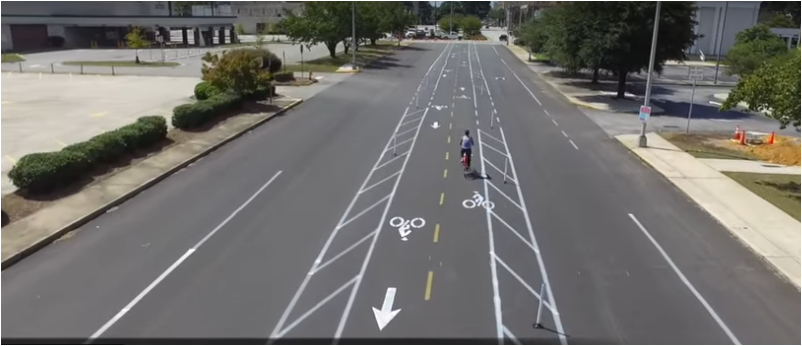

Tools Used
Initiated By
- NewTown Macon
Partners
- Macon-Bibb County (including Macon Urban Development Authority and Main Street Macon)
- 8 80 Cities
- Bike Walk Macon
Results
The pilot led to development of permanent protected bike lanes.
Macon Connects
A temporary network of cycling lanes convinced the community of Macon GA to create permanent protected lanes. One-block sections of street that had previously been made more bike-friendly had not been used much and there was concern that not enough people would actually cycle. The pilot created the largest pop-up bike lane network in the world and tested five alternative kinds of bike infrastructure, from sharrows (painted stripes) to more buffered lanes and protected cycle racks with bollards.
Background
Macon Georgia, USA is a community of about 150,000 residents. One key strategy in the municipality’s Action Plan was to “cultivate connectivity.” In June of 2016, it held a three-day Ideas Festival that generated over 3,400 ideas for increasing connectivity. Despite relatively good driving conditions, residents wanted to rely less on the car and have other means of transportation available to them. Cycling seemed to be a suitable alternative mode of transportation. However, in the past, one-block sections of street that had been made more bike-friendly had not been used much and there was concern that not enough people would actually cycle.
In October 2015, Knight Foundation launched a nationwide competition for the best ideas to improve cities. NewTown Macon in partnership with Macon-Bibb County (including Macon Urban Development Authority and Main Street Macon), and Bike Walk Macon submitted a proposal along with 8 80 Cities and Better Block, who provided community engagement and prototyping services, respectively.
We submitted an idea to engage the city in a conversation about improving connectivity in Macon, and then to test out those ideas on the streets of Macon. This included building a pop-up (temporary) bike network throughout the urban core, also known as a “minimum grid”. Out of over 4,500 applications, 32 ideas were selected to be funded, including Macon Connects.
The program targeted citizens who had not previously used great pedestrian and bicycle infrastructure.
Getting Informed
The three-day Ideas Festival consisted of 19 events that appealed to a wide range of audiences. With over 1,100 attendees, there were 430 active participants who generated over 3,400 ideas. The project also relied on experience from other similar programs, through its partnership with 8 80 Cities and Better Block.
The pilot then tested five alternative kinds of bike infrastructure, from sharrows (a painted stripe) to more buffered lanes and protected cycle racks with bollards.
Delivering the Program
The project involved creation of an eight mile temporary pop-up bike network, believed to be the largest such temporary installation ever. It took four hundred and ninety-eight cans of paint, five days of application, 180 bollards, 80 volunteers, 13 bottles of Gatorade, and two golf carts. Macon is a great city for the approach because it has wide streets that can be converted into areas that have beautiful bike paths, better sidewalks and allow for car accommodations as well. (Vivid, Credible Communication)


The network connected existing bike infrastructure with a series of new interventions, including median cycle tracks, bike boxes, buffered bike lanes, two-way cycle tracks, and the Copenhagen Left (where you first cross the perpendicular street, stop, and then wait for green or for traffic to clear to cross the original street to complete the left turn.)
The bike lanes were temporary – the paint was either washed away by the weather or cleaned off the streets by Macon-Bibb County. The pilot was intended to be a weekend-long test, but when Mayor Robert Reichert cut the ribbon, he declared it would stay up for a week.
The project also coincided with the launch of Macon’s bike-share program, which enabled adult residents to rent Zagster cruiser bikes at three downtown locations.
Overcoming Barriers
The main barriers and how they were overcome are outlined below.
- Safety. The dedicated lanes made drivers aware of bikes on the streets, and helped cyclists feel safe.
- Misconceptions about time, inconvenience and safety. These were overcome by having people try out cycling with appropriate infrastructure
- Concerns about wasting tax dollars on facilities that few would use. These concerns were overcome by showing through the pilot how many people would cycle if there were appropriate infrastructure.
The project tested five alternative kinds of bike infrastructure, from sharrows (a painted stripe) to more buffered lanes and protected cycle racks with bollards. The protected lanes proved to be by far the most popular, accounting for four out of five rides; 95% of respondents preferred bike infrastructure with buffers and/or bollards. Sharrows were the least effective type of bicycle infrastructure, with only 4% of respondents feeling “very safe” riding on them.
Financing the Program
Total project cost was approximately US$110,000 - for a cost of $72 per rider.
Measuring Achievements
Data were collected with four counters along the lanes as well as three volunteers who recorded the demographics of cyclists using the infrastructure. We also conducted an online survey to capture feedback about the pop up bike network from the general public.
Results
Individual Participants
Individuals were more likely to cycle during the time the temporary bike lanes were in place. Bike counts along the pop-up network were 9.5 times (854%) higher during Macon Connects as compared to “normal conditions” when there was no bike infrastructure present. Along the four corridors where we placed bike counters, bike counts increased from as little as 5.5 times (456%) to as much as 18.6 times (1758%).
We also found out that 71% of respondents supported building a protected bike network in Macon. Of those who had the chance to ride the pop-up bike network, 88% agreed that it had inspired them to bike more.
A positive spillover effect of the bike lanes was that it created new opportunities for residents to enjoy their own city. 68% reported visiting an area that they normally do not go to. 75% reported seeing new shops and/or amenities along the pop-up bike lane network that they had never noticed before.
“It’s hard to explain to you what a massive shift [this has been]. From ‘Oh, people aren’t going to bike, we put in a block and nobody used it,’ to now they know what good infrastructure looks like, and they’re going to use it” says Josh Rogers, president and CEO of the nonprofit NewTown Macon, which works to revitalize the city’s downtown.
Overall Impacts
1,518 riders experienced the network and the total project cost was approximately $110,000 - for a cost of $72 per rider. To experience the full diversity of ridable treatments installed during the pop-up, riders would otherwise have needed to travel across the country and world to find and ride examples.
Since the event, Macon’s traffic engineer volunteered to design bicycle accommodations according to NACTO standards for permanent installation. The first mile-long section was soon installed as part of a repaving project. The longest previous section of bicycle infrastructure was one block! A second multi-neighborhood connection was designed and funded for installation the following summer.
Contacts
Josh Rogers
josh.m.rogers@gmail.com
Notes
- Piloting an intervention is a key stage in the social marketing methodology. Piloting tests how well an approach works with a particular audience and how it can be improved. Almost all pilots are done with a small part of a community before rolling out to a wider community. This pilot was one of the few that tested with an entire mid-sized community – but for a limited amount of time. This is a great way to overcome resistance to a new idea.
- To the best of our knowledge, this was the largest pop-up bike lane network in the world. It was created in only five days by 80 volunteers.
- Using an Ideas Festival allowed us to do formative research , test alternative approaches and engage the wider community, particularly targeting those who don’t already bike.
- Macon’s black residents, who make up 53 percent of the population, were underrepresented on the pop-up’s lanes by 21 percent, and the “data reveals that there needs to be more effort dedicated to ensuring that bike infrastructure links to different neighborhoods and connects residents of all racial backgrounds.”
- Few people over age 55 and younger than 17 participated.
Recommendations
- Start with a minimum grid that connects people to popular destinations – start with a 1-mile radius grid and then expand to a 3-mile radius grid. The 3-mile radius grid will connect ten times the number of residents to bike infrastructure.
- Prioritize safety and consistency for all road users.
- Continue to educate and engage the public about bicycling.
- Develop metrics and set goals for increasing cycling rates.
Data Sources
http://betterblock.org/blog/2016/09/19/ride-the-worlds-largest-pop-up-bike-lane-grid/ http://www.newtownmacon.com/macon-connects/ http://www.41nbc.com/2016/09/14/largest-pop-bike-lane-world-built-macon/ https://nextcity.org/daily/entry/macon-bike-lane-popup-increased-cycling